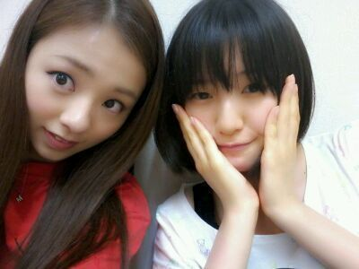
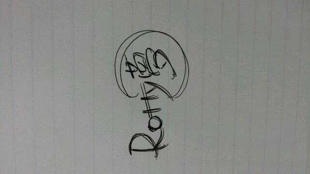

ホッホッ♪
ろってぃーだよぉ(*^^*)
大好きな かなりん♪
どだよぉぉ(〃ω〃)

そしていきなり本題さっ｀・ω★
ろってぃ〜む。マーク☆

たくさんのコメント
ありがとうこざいます*^^*
何かありがとお...(〃_〃)
いいね。と言ってもらえて
ほっ。。とました。
絶対この通りっ!!
って訳ぢゃなくていいんだっ^ω^
何かね 『夢』のまわりの円が
自然と 三日月☆みたいに
なっちゃったから
黄色でもいいし
他の色でもいいし
コメントであったんだけど
まわりに お星様を
ちりばめたっても
かまいません (*・ω・*)
文字の書き方も
変えていただいても
大丈夫だよん ♪)))
るんるんっ(⌒‐⌒)
なんだか
たっのしっいなぁ〜 ♪わら
そんな気持ちになってきたなう。
にっ☆
あれやでっ、!
明日 金曜日やろっ!?
金曜日は何だかわかるっ・∀・!?
『乃木ここ★』ですえーー 。
ホームページから
是非見てくださいね〜 (*^^*)
まひろが絶叫マシーンに
乗る番は 明日かなっ?笑
よかったら感想聞かせて
ください〜 (⌒‐⌒)
自分どんななってるか
全く分からんけど... 笑
ほな 明日また更新
するでしっ !
ばいちろりん。
... 豆乳カルボナーラうどん。
のし。